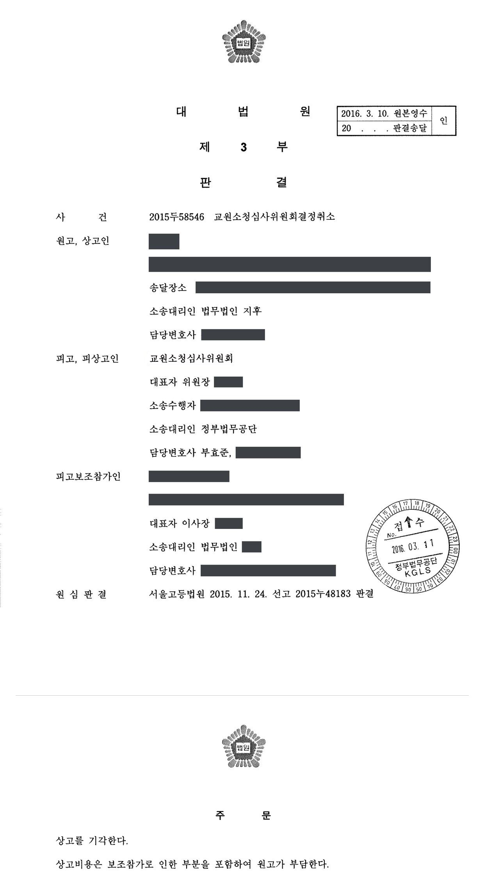

학과 통폐합에 따른 교원 소속변경 관련 소청 결정 취소소송 (2·3심)
서울고등법원 2015누48183 · 대법원 2015두58546 · 담당변호사 부효준
판결문


사건의 요지
학과 통폐합 과정에서 교원의 소속 학과 확인과 소속변경처분이 다투어진 교원소청심사 결정에 관한 사건으로, 소청 결정의 당부와 교원의 학과 소속에 관한 판단이 쟁점이었습니다.
사건의 주요 내용
원고는 사립 전문대학의 교원으로, 파면처분이 법원 판결로 취소되어 2013년 10월 원래 소속 학과로 복직하였습니다. 그런데 대학은 2012년 교육 주무부처에 제출한 학생 정원조정 계획에 따라 2013학년도 학칙 개정으로 원고의 소속 학과를 폐지하고, 그 학과와 다른 학과의 일부 전공을 통합한 성격의 새 학과를 신설하였으며(2014년 학과 명칭과 교과과정을 다시 변경), 다른 학과 소속이던 교수 2명만 새 학과로 소속을 변경하였습니다.
원고와 같은 학과의 교수 1명은 2014년 2월 새 학과로의 소속 변경을 신청하였으나, 대학 구조조정위원회는 해당 학과 교수 전원의 동의가 있어야 한다고 결정하였고 새 학과 교수들이 동의하지 않자 대학은 2014년 3월 원고를 교양 교과 담당 학과로 소속을 변경하는 처분을 하였습니다. 원고는 교원소청심사위원회에 새 학과 소속 교원 지위의 확인과 소속변경처분의 취소를 청구하였으나 2014년 7월 받아들여지지 않았습니다.
원고가 제기한 소청 결정 취소소송의 1심(서울행정법원 2014구합71320)은 2015년 6월 소속 확인 부분은 원고 패소, 소속변경처분 취소청구를 받아들이지 않은 부분은 원고 승소로 판결하여 양쪽이 모두 항소하였습니다. 부효준 변호사는 피고 교원소청심사위원회를 대리하여 항소심과 상고심을 수행하였습니다.
원고의 주장
- 원고의 소속 학과가 다른 학과와 통폐합되어 새 학과가 되었고 그 뒤 명칭만 바뀐 것이므로, 원고는 통폐합에 따라 당연히 새 학과 소속 교원의 지위를 취득하였다.
- 학과 폐지는 구체적·객관적 기준 없이 교수회의 심의도 거치지 않고 학생들의 반대 의사를 반영하지 않은 채 신입생 충원율이 97.5%에 이르던 학과를 1년 만에 폐지한 것으로 위법하고, 재적생이 남아 있어 폐과도 아니었으므로, 적법한 폐지를 전제로 한 소속변경처분은 인사재량권을 일탈·남용한 것이다.
- 새 학과에는 원고가 강의할 수 있는 과목이 있고 전임교원이 과원도 아니었으므로 임용형태·직무수행능력·업무실적 등을 고려한 객관적 심사기준에 따라 소속을 정하여야 했는데, 그런 심사 없이 다른 학과 교수들만 새 학과로 보낸 것은 재량권 남용이며, 법원 판결로 복직한 원고에 대한 보복성 인사이다.
부효준 변호사의 주장
- 학과가 통폐합되더라도 학칙에 승계 규정이 없는 한 소속 교원이 신설 학과로 당연히 승계되는 것은 아니고 별도의 인사 조치가 필요하므로, 원고가 새 학과 소속 교원의 지위를 당연히 취득하였다고 볼 수 없다고 주장하였습니다.
- 교원의 신분을 유지하면서 소속 학과만 바꾸는 처분은 사립학교법 제56조 제1항이 금지하는 '불리한 처분'(휴직·면직 등)에 해당하지 않으므로, 학과 폐지로 폐직·과원이 되었다는 요건이 충족되었는지와 관계없이 소속변경처분이 그 자체로 위법하게 되는 것은 아니라고 반박하였습니다.
- 학과 폐지는 학칙 개정 절차(공고, 의견 제출, 대학평의원회와 교무위원회의 심의·의결, 공포)를 적법하게 거쳤고, 재적생이 모두 휴학하여 수업할 학생이 없었으며, 새 학과는 폐지된 학과와 동일성이 없고 전임교원도 이미 확보되어 있었으므로 원고를 교양 학과로 배치한 데 합리적 사유가 있고, 대학이 의견 개진 기회와 수업 선택권, 자구노력 기회를 부여한 점에 비추어 재량권 일탈·남용이 없다고 주장하였습니다.
법원의 판단
항소심은 복수의 학과가 통폐합되는 경우 학칙에 통폐합 대상 학과의 교원이 신설 학과 소속이 된다는 규정이 없는 한 교원이 신설 학과로 당연히 승계되는 것은 아니고 별도의 인사 조치가 있어야 한다고 보아, 원고가 새 학과 소속 교원의 지위를 당연히 취득하였다는 주장을 1심과 같이 받아들이지 않았습니다.
소속변경처분에 관하여는, 교원의 지위를 그대로 유지하면서 소속 학과만 변경하는 처분은 면직·휴직·강임에 비하여 기본권 제한의 정도가 훨씬 적어 대학의 자율권이 최대한 존중되어야 하므로 사립학교법 제56조 제1항의 '불리한 처분'에 해당하지 않고, 따라서 학과 폐지로 폐직·과원이 되었다는 요건이 충족되지 않았더라도 그 점만으로 처분이 위법하게 되는 것은 아니며 그 사정은 재량권 일탈·남용 판단의 고려요소가 될 뿐이라고 판단하였습니다. 면직을 회피하기 위한 소속 변경에까지 면직 때와 같은 심사기준을 정하여 심사하여야 한다고 해석할 수는 없다고도 보았습니다.
재량권 일탈·남용에 관하여는, 학과 폐지가 학칙 개정 절차를 적법하게 거친 점, 처분 당시 재적생이 남아 있어 '폐과'로 단정할 수는 없으나 이후 모두 휴학하여 수업할 학생이 없었고 원고 스스로 새 학과 배치를 신청한 점, 폐지된 학과와 새 학과 사이에 유사성은 있어도 동일성은 인정되지 않는 점, 새 학과는 법정 전임교원을 이미 확보하였고 소속 교수들의 반대가 비합리적이지 않은 점, 대학이 의견 개진 기회·수업 선택권·자구노력 기회를 준 점, 보복성 인사로 단정할 자료가 없는 점을 들어 위법하지 않다고 보았습니다.
이에 따라 항소심은 2015년 11월 1심 판결 중 피고 패소 부분을 취소하고 원고의 청구를 모두 받아들이지 않았으며, 대법원은 2016년 3월 상고이유가 상고심절차에 관한 특례법 제4조에 해당한다고 보아 심리불속행으로 상고심을 마무리하여 항소심 판결이 확정되었습니다.
원고의 주장대로 이 사건 대학의 종전 학과와 다른 학과의 일부 전공이 2013학년도에 신설 학과로 통폐합되었고 신설 학과와 그 뒤 명칭이 변경된 학과의 동일성이 인정된다고 하더라도, 복수의 학과가 통폐합되는 경우 학칙에 통폐합 대상인 학과의 소속 교원이 통폐합으로 인하여 신설된 학과의 소속이 된다는 규정이 없는 한 당해 교원이 신설된 학과로 당연 승계되는 것은 아니고, 당해 교원을 신설된 학과의 소속으로 하는 별도의 인사 조치가 있어야 할 것이다.
서울고등법원 2015누48183 판결 이유 '3. 나.' 2) 원고가 신설 학과 교수 지위를 취득하였는지 여부(학과 이름은 역할어로 바꿈)
살피건대, 아래와 같은 점을 종합하여 고려하면, 원고의 소속을 교양과로 변경하여 원고로 하여금 자신의 전공 분야를 강의하지 못하였다고 하더라도 그러한 사정만으로 이를 사립학교법 제56조 제1항에 규정한 '불리한 처분'에 해당한다고 보기는 어려우므로, 종전 학과가 적법하게 폐지되어 폐직이나 과원이 되었다는 요건이 충족되지 아니하였다고 하더라도 그러한 점을 들어 이 사건 처분이 위법한 처분이라고 할 수 없다(다만, 그러한 사정은 이 사건 처분이 재량권을 일탈·남용하였는지 여부를 판단함에 있어 고려요소가 될 것이다).
서울고등법원 2015누48183 판결 이유 '3. 다.' 2) 이 사건 처분이 사립학교법 제56조 제1항 본문의 불리한 처분에 해당하는지 여부 나) 판단(학과 이름은 역할어로 바꿈)
사립학교법 제56조 제1항 단서에서 규정하고 있는 '학급·학과의 개폐에 의하여 폐직이나 과원이 된 때'라 함은 적법한 학칙 개정절차를 통해 설치학급 내지 학과가 폐지되거나 편제가 축소되는 등으로 인해 소속 교원의 직위나 정원이 없어지게 된 경우를 의미하는데(대법원 2010. 6. 24. 선고 2010두5103 판결 등 참조), 이 사건 종전 학과 폐지는 당시 시행 중이던 2013년도 학칙에 따라 종전 학과 폐지 및 신설 학과 신설이 포함된 학칙의 개정안을 7일 이상 공고하고, 교직원에 대한 의견 제출절차 및 대학평의원회 심의·의결, 교무위원회 심의·의결을 거친 후 총장이 공포하는 등의 절차를 거쳤다.
서울고등법원 2015누48183 판결 이유 '3. 다.' 3) 이 사건 처분이 재량권의 일탈·남용에 해당하는지 여부 나) 판단 ① 부분(학과 이름은 역할어로 바꿈)
※ 판결 이유 가운데 이 사건의 판단 기준이 된 부분을 그대로 옮긴 것으로, 당사자 이름 등은 가렸습니다.
이 사건이 보여 주는 것
학과 통폐합·폐지 국면에서 교원이 신설 학과로 자동으로 옮겨 가는 것은 아니며 대학의 별도 인사 조치가 필요합니다. 또 교원의 신분을 유지한 채 소속만 바꾸는 처분은 사립학교법 제56조 제1항이 보호하는 '불리한 처분'으로 보지 않으므로, 소속변경을 다투려면 폐과 요건의 미충족을 주장하는 것만으로는 부족하고 절차 위반, 합리적 사유의 부재, 보복성 등 재량권 일탈·남용 사유를 구체적으로 입증해야 합니다.
반대로 대학과 소청심사위원회 입장에서는 학칙 개정 절차의 준수, 재적생과 전임교원 확보 현황, 의견 진술 기회와 선택권 부여 등 처분 경위를 기록으로 남겨 두는 것이 소송에서 결정적이라는 점을 이 사건이 보여 줍니다. 1심에서 일부 패소한 결론이 항소심에서 뒤집힌 것도 이러한 사정들이 구체적으로 정리되었기 때문입니다.
관련 법령사립학교법 제55조, 제56조 제1항 · 구 교육공무원법(2015. 3. 27. 개정 전) 제43조 제8항 · 교육공무원임용령 제7조 제3항 · 국가공무원법 제70조 제1항 제3호, 제73조의4 · 교원지위향상을 위한 특별법 제6조, 제9조 · 고등교육법 제6조, 같은 법 시행령 제4조 · 대학설립·운영 규정 제6조 · 상고심절차에 관한 특례법 제4조, 제5조
관련 단어교원소청심사위원회 결정 취소학과 통폐합학과 폐지교원 소속변경사립학교법 제56조불리한 처분폐직·과원대학의 자율권학칙 개정 절차재량권 일탈·남용전문대학 교원심리불속행 확정
비슷한 처분을 받으셨다면
행정처분은 처분이 있음을 안 날부터 90일 이내에 행정심판이나 취소소송으로 다투어야 하고, 기간이 지나면 돌이킬 수 없는 처분은 집행정지를 서둘러야 합니다. 처분서를 받은 날짜부터 확인해 드립니다.